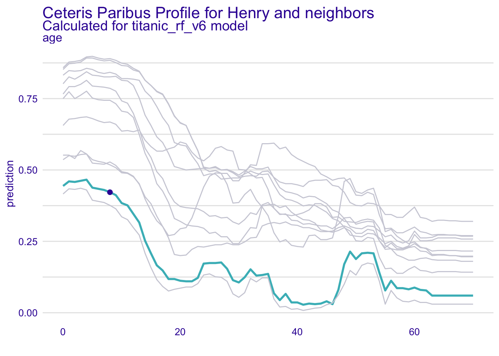
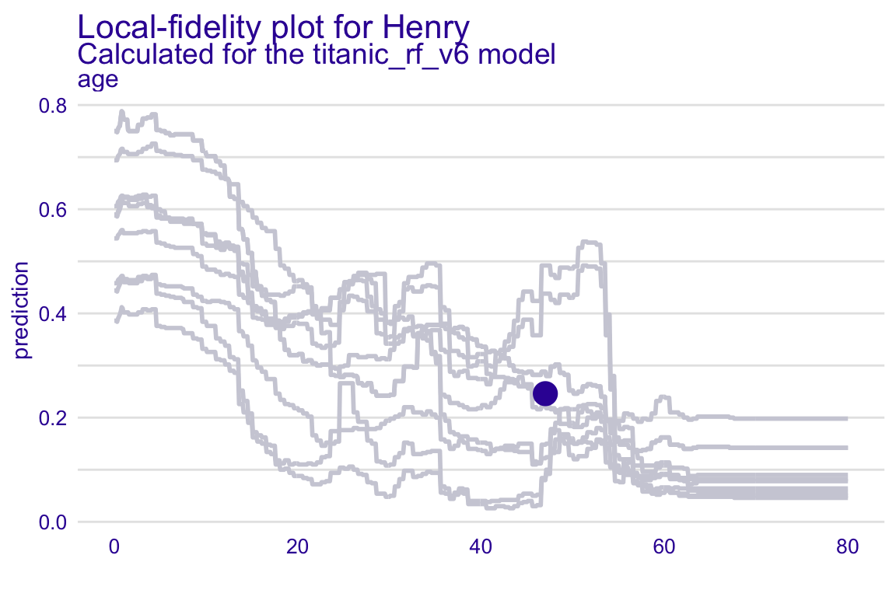

Chapter 8 Local Diagnostics With Ceteris-paribus Profiles
8.1 Introduction
It may happen that, while the global predictive performance of the model is good, model predictions for some observations are very bad. In this chapter, we present two local-diagnostics techniques that can address this issue. In particular, we focus on fidelity plots: the plot of CP profiles for nearest neighbors and the local-fidelity plot.
The idea behind fidelity plots is to select a number of observations (“neighbors”) from the validation dataset that are closest to the instance (observation) of interest. Then, for the selected observations, we plot CP profiles and check how stable they are. Additionally, if we know true values of the dependent variable for the selected neighbors, we may add residuals to the plot to evaluate the local fit of the model.
8.2 Intuition
One approach to local model diagnostics is to examine how the predictions vary for observations from the training dataset. Figure 8.1 presents CP profiles for the instance of interest and its 10 nearest neighbors for the random forest model for the Titanic dataset (Section 4.1.3). The profiles are almost parallel and very close to each other. This suggests that model predictions are stable around the instance of interest, because small changes in the explanatory variables (represented by the nearest neighbors) have not got much influence on the predictions.

Figure 8.1: (fig:profileWith10NN) Ceteris-paribus profiles for a selected instance (dark violet line) and 10 nearest neighbors (light grey lines) for the titanic_rf_b6 model. The profiles are almost parallel and close to each other what suggests the stability of the model.
Once we have selected the nearest neighbors, we can also look closer at the model fit around the point of interest. Figure 8.2 presents histograms of residuals for the entire dataset and the selected neighbors for the random forest model for the Apartments dataset (Section 4.2.3). The distribution of residuals for the entire dataset is rather symmetric and centered around 0, suggesting a reasonable average performance of the model. On the other hand, the residuals for the selected neighbors are centered around the value of 500. This sugests that, on average, the model predictions are biased for the instance of interest.

Figure 8.2: (fig:profileBack2BackHist) Histograms of residuals for the apartments_rf_v5 model for the Apartments dataset. Upper panel: residuals calculated for all observations from the dataset. Bottom panel: residuals calculated for 25 nearest neighbors of the instance of interest.
8.3 Method
The proposed method is based on three elements:
- identification of nearest neighbors,
- calculation and visualization of CP profiles for the selected neighbors, and
- analysis of residuals for the neighbors.
In what follows we discuss each of the elements in more detail.
8.3.1 Nearest neighbors
There are two important questions related to the selection of the neighbors “nearest” to the instance (observation) of interest:
- How many neighbors should we choose?
- What metric should be used to measure the “proximity” of observations?
The answer to both questions is, of course, it depends.
- The smaller the number of neighbors, the more local is the analysis. However, a very small number will lead to a larger variability of the results. In many cases we found that 20 neighbors works fine. However, one should always take into account computational time (smaller number of neighbors results in quicker calculations) and the size of the dataset (for a small dataset, smaller sets of neighbors may be preferred).
- The metric if very important. The more explanatory variables, the more important is the choice. In particular, the metric should be capable of accommodating variables of different nature (categorical, continuous). Our default choice is the Gower similarity measure:
\[ d_{gower}(x_i, x_j) = \frac 1p \sum_{k=1}^p d^k(x_i^k, x_j^k), \] where \(x_i\) is a \(p\)-dimensional vector of explanatory covariates for the \(i\)-th observation and \(d^k(x_i^k,x_j^k)\) is the distance between values of the \(k\)-th variable for the \(i\)-th and \(j\)-th observations. Note that \(d^k()\) depends on the nature of the variable. For instance, for a continuous variable it is equal to \(|x_i^k-x_j^k|/\{max(x_1^k,\ldots,x_n^k)-min(x_1^k,\ldots,x_n^k)\}\), i.e., the absolute difference scaled by the observed range of the variable. On the other hand, for a categorical variable, it is simply \(I(x_i^k = x_j^k)\), where \(I()\) is the indicator function. Note that \(p\) may be equal to the number of all explanatory variables included in the model, or only a subset of them.
Once we have decided on the number of neighbors, we can use the chosen metric to select the required number observations “closest” to the one of interest.
8.3.2 Profiles for neighbors
Once nearest neighbors have been identified, we can graphically compare CP profiles for selected (or all) variables.
For a model with a large number of variables, we may end up with a large number of plots. In such a case a better strategy is to focus only on \(K\) most important variables, selected by using the variable-importance measure (see Chapter 7).
8.3.3 Local-fidelity plot
CP profiles are helpful to assess the model stability. In addition, we can enhance the plot by adding residuals to it to allow evaluation of the local model fit. For model \(f()\) and observation \(i\) described by the vector of explanatory variables \(x_i\), the residual is the difference between the observed and predicted value of the dependent variable \(Y_i\), i.e.,
\[ r_i = y_i - f(x_i). \] Note that, for a binary variable, the residual is the difference between the value of 0 or 1, depending on how we code “success,” and the value of the predicted probability of “success.” This defintion also applies to categorical responses, as it is common to define, in such case, a binary “success” indicator and compute the predicted probaiblity of “success” for each category separately.
The plot that includes CP profiles for the nearest neighbors and the corresponding residuals is called a local-fidelity plot.
8.4 Example: Titanic
As an example, we will use the predictions for the random forest model for the Titanic data (see Section 4.1.3).
Figure 8.3 presents a detailed explanation of the elements of a local-fidelity plot for age, a continuous explanatory variable. The plot includes eight nearest neighbors of Henry (see Section 4.1.5). Profiles are quite apart from each other, which indicates potential instability of model predictions. However, the residuals included in the plots are positive and negative, indicating that, on average, the instance prediction should not be biased.
Figure 8.4 presents a local-fidelity plot for the categorical explanatory variable class. Henry and his neighbors traveled in the 1st class. In different panels we see how the predicted probabilityof survival changes if the 1st class is replaced, for instance, by the 2nd (in most cases, they probability will be reduced) or the deck crew (in most cases, the probability will increase). Such plots can help to detect interactions, as we see that the same change (let’s say, from the 1st to the 3rd class) results in a different change of the model prediction.
![(fig:localFidelityPlots) Elements of a local-fidelity plot for a continuous explanatory variable. The green line shows the Ceteris-paribus profile for the instance of interest. Profiles of the nearest neighbors are marked with grey lines. The vertical intervals correspond to residuals; the shorter the interval, the smaller the residual and the more accurate prediction of the model. Blue intervals correspond to positive residuals, red intervals to negative intervals. Stable model will have profiles close to each other; additive model will have parallel lines.](figure/localFidelityPlots.png)
Figure 8.3: (fig:localFidelityPlots) Elements of a local-fidelity plot for a continuous explanatory variable. The green line shows the Ceteris-paribus profile for the instance of interest. Profiles of the nearest neighbors are marked with grey lines. The vertical intervals correspond to residuals; the shorter the interval, the smaller the residual and the more accurate prediction of the model. Blue intervals correspond to positive residuals, red intervals to negative intervals. Stable model will have profiles close to each other; additive model will have parallel lines.
![(fig:localFidelityPlots2) The local-fidelity plot for the categorical explanatory variable `class` in the random effects model for the Titanic data, Henry, and his 10 neighbors. Each panel indicates how the model prediction would change if the class changed from `1st` to another one. Dots indicate original model predictions for the neighbors; the end of the interval corresponds to model prediction after changing the class. The top-lef panel indicates that, for the majority of the neighbors, the change from the `1st` to the `2nd` class reduces the predicted value of the probability of survival. On the other hand, the top-right panel indicates that changing the lass to `deck crew` members increases the predicted probability.](figure/cp_fidelity_2.png)
Figure 8.4: (fig:localFidelityPlots2) The local-fidelity plot for the categorical explanatory variable class in the random effects model for the Titanic data, Henry, and his 10 neighbors. Each panel indicates how the model prediction would change if the class changed from 1st to another one. Dots indicate original model predictions for the neighbors; the end of the interval corresponds to model prediction after changing the class. The top-lef panel indicates that, for the majority of the neighbors, the change from the 1st to the 2nd class reduces the predicted value of the probability of survival. On the other hand, the top-right panel indicates that changing the lass to deck crew members increases the predicted probability.
8.5 Pros and cons
Local-fidelity plots may be very helpful to check if
- the model is locally additive, as for such models the CP profiles should be parallel;
- the model is locally stable, as in that case the CP profiles should be close to each other;
- the model fit for the instance of interest is good, as in that case the residuals should be small and their distribution should be balanced around 0.
The drawback is that such plots are quite complex and lack objective measures of the quality of the model fit. Thus, they are mainly suitable for an exploratory analysis.
8.6 Code snippets for R
In this section, we show how to use the R package ingredients (Biecek 2019b) to construct local-fidelity plots. More details and examples can be found at https://modeloriented.github.io/ingredients/.
We use the random forest model titanic_rf_v6 developed for the Titanic dataset (see Section 4.1.3 ) as the example. Recall that we try to address a classification problem for a binary dependent variable - we want to predict the probability of survival for a selected passenger.
DALEX explainers for the model and the henry data frame are retrieved via archivist hooks, as listed in Section 4.1.7.
library("randomForest")
explain_rf_v6 <- archivist::aread("pbiecek/models/9b971")
library("DALEX")
henry <- archivist::aread("pbiecek/models/a6538")
henry## class gender age sibsp parch fare embarked
## 1 1st male 47 0 0 25 CherbourgWe will show how to construct Figure 8.1. Toward this aim we need some number of passengers most similar to henry. To select the ‘’neighbors’’, we use the select_neighbours() function from the ingredients package. It returns n observations (by default, 20) most similar to the observation of interest according to the distance measure (by default, the Gower distance is used).
In the example below, we select 10 nearest neighbors to henry find from the titanic dataset. Note that the similarity is based only on two explanatory variables, gender, and class, as indicated in the argument variables.
library("ingredients")
henry_neighbors <- select_neighbours(titanic,
henry,
n = 10,
variables = c("class", "gender"))Now we are ready to plot profiles for Henry and his neighbors. First, we have got to calculate the corresponding profiles with ceteris_paribus() function introduced in Section 6.6.
cp_henry <- ceteris_paribus(explain_rf_v6,
henry,
variable_splits = list(age = seq(0,80,0.1)))
cp_henry_neighbors <- ceteris_paribus(explain_rf_v6,
henry_neighbors,
variable_splits = list(age = seq(0,80,0.1)))Subsequently, we can plot the profiles. Note that, in the example below, we do this only for a single variable age.
library("ggplot2")
plot(cp_henry_neighbors, color = '#ceced9') +
# show_profiles(cp_henry, size = 2) +
ggtitle("Ceteris-paribus profiles for Henry and neighbors", "Calculated for the titanic_rf_v6 model")
To construct the local-fidelity plot presented in Figure 8.3, we have got to add the information about the observed values of the dependent variable for the selected neighbors. Toward this aim, we use the y argument in the ceteris_paribus() function. The argument takes numerical values. Our binary dependent variable survived assumes values yes/no; to convert them to numerical values, we use the survived == "yes" expression.
cp_henry_neighbors <- ceteris_paribus(explain_rf_v6,
henry_neighbors,
y = henry_neighbors$survived == "yes",
variable_splits = list(age = seq(0,80,0.1)))Finally, we add residuals to the plot by using the show_residuals() function. As a result, we obtain the local-fidelity plot for henry.
plot(cp_henry_neighbors, color = '#ceced9') +
# show_profiles(cp_henry, size = 2) +
show_observations(cp_henry, variables = "age", size = 5) +
# show_residuals(cp_henry_neighbors, variables = "age") +
ggtitle("Local-fidelity plot for Henry","Calculated for the titanic_rf_v6 model")
References
Biecek, Przemyslaw. 2019b. Ingredients: Effects and Importances of Model Ingredients. https://ModelOriented.github.io/ingredients/.